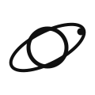

ORBISFeito pela @SyraDevOps
Iniciando conexão...
SYRA-SAT · BRASIL
Veja a atmosfera em movimento.
Imagens meteorológicas atualizadas em intervalos de 10 minutos.
ORBISFeito pela @SyraDevOps · @planetariosj
Buscando imagens recentes...
Brasil completoGeoColor
—
Visual natural de dia e nuvens realçadas à noite.
Ritmo da animação
Syra-Sat · transmissão ao vivo